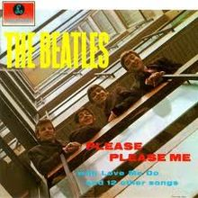
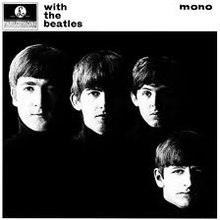
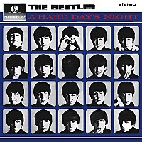
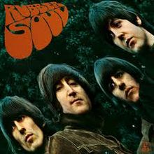

Please Please Me
Clique na imagem para ser redirecionado para o album!
Please Please Me é o álbum de estreia gravado em estúdio e lançado pelos Beatles em 22 de março de 1963. O álbum contém 14 canções, oito escritas por Lennon/McCartney. Em 2003, a revista Rolling Stone listou o álbum no número 39 na lista de 500 melhores álbuns de todos os tempos.
With the Beatles
Clique na imagem para ser redirecionado para o album!
With the Beatles é o segundo álbum do grupo, lançado em 22 de novembro de 1963 e contendo 14 canções
A Hard Day's Night
Clique na imagem para ser redirecionado para o album!
A Hard Day's Night é o terceiro álbum da banda, lançado em 1964 na Inglaterra, acompanhando o lançamento do filme homônimo e contendo 13 musicas
Beatles for Sale

Clique na imagem para ser redirecionado para o album!
Beatles for Sale é o quarto álbum do The Beatles, lançado em dezembro de 1964.
Help!

Help! é o quinto álbum do grupo The Beatles, que teve também um lançamento simultâneo de um filme com o mesmo nome.Lançado em agosto de 1965,
Rubber Soul
Clique na imagem para ser redirecionado para o album!
Foi gravado em pouco mais de um mês e lançado em 3 de dezembro de 1965, sendo produzido por George Martin. É citado por muitos críticos de música como o álbum em que os Beatles começaram a tornar seu som mais eclético e sofisticado. Este álbum está na lista dos 200 álbuns definitivos no Rock and Roll Hall of Fame
Revolver

Clique na imagem para ser redirecionado para o album!
lançado em 5 de agosto de 1966, inicialmente no Reino Unido e em 8 de agosto nos EUA. Atingiu o primeiro lugar nas paradas de sucesso americana e inglesa. Este álbum está na lista dos 200 álbuns definitivos no Rock and Roll Hall of Fame.
Considerado ainda mais inovador do que seu antecessor (Rubber Soul, de 1965), Revolver marca a adesão oficial dos Beatles ao Psicodelismo. Passeia desde a música oriental "Love You To", aos apelos vibrantes de "Got to Get You into My Life", da solidão lúgubre de "Eleanor Rigby", ao experimentalismo psicodélico de "Tomorrow Never Knows" e o ufanismo de "Yellow Submarine".
Sgt. Pepper's Lonely Hearts Club Band

Clique na imagem para ser redirecionado para o album!
Lançado a 26 de maio de 1967 no Reino Unido e a 2 de junho nos Estados Unidos, tornou-se imediatamente um enorme sucesso comercial e crítico, permanecendo durante 27 semanas no topo das tabelas de álbuns do Reino Unido e 15 semanas na primeira posição nos Estados Unidos. Na altura em que foi lançado, o álbum foi aclamado pela vasta maioria dos críticos pela sua inovação na produção musical, escrita e design gráfico, e por criar uma ponte que divide a musica popular e a arte legitima, bem como dar uma representação musical da geração do seu tempo e a contra-cultura contemporânea. A revista Time o considerou "uma evolução histórica no progresso da música" e a New Statesman elogiou a sua elevação da música pop ao nível de arte.[2] O trabalho conquistou quatro Prêmios Grammy em 1968, incluindo a categoria Álbum do Ano, o primeiro LP de rock a receber tal honra.
Magical Mystery Tour
Clique na imagem para ser redirecionado para o album!
, lançado no formato EP duplo no Reino Unido e LP nos E.U.A. Produzidas por George Martin, ambas as versões incluem as seis canções da trilha sonora do filme homônimo de 1967. O disco foi lançado no Reino Unido no dia 8 de dezembro de 1967 como um EP duplo de seis faixas, pelo selo Parlophone, e, nos E.U.A., no dia 27 de novembro de 1967, como um LP de onze faixas compilado pela Capitol Records, incluindo no segundo lado do disco músicas dos compactos lançados pela banda naquele ano de 1967. O resto do mundo, incluindo o Brasil (pelo selo Odeon), seguiu o formato inglês. O primeiro lançamento oficial no Reino Unido do LP de 11 faixas não ocorreu até 1976.